Chris Greenhalgh, 2009-07-24
Contents:
This document aims to bring together some examples and strategies for modelling with bigraphs.
See also:
The place graph component of bigraphs is less expressive than the link graph component. It's structure is simpler and "apparent". So one rule of thumb is: use the place graph whenever it is sufficiently expressive, and only use the link graph if that fails.
This is comparable to the object/entity modelling choice of composition vs association. Composition (part of) relationships typically imply fate sharing, e.g. common life-cycle. This is also true in bigraphs: children of a node in a parameter get moved around, copied or deleted together with their parent.
See for example records and tuples (below).
A link connects any number of ports from any number of controls and is undirected. Consequently links between multiple ports have limitted expressiveness.
If a link is directed then this can usually be expressed by splitting each port into two: one "outbound" port and one "inbound" port.
If a port may be linked to from several other ports then there is no way to associate information with any one peer port in particular. For example consider a web server with one "server" port to which many browsers are connected; there is no place for information at the server end about an individual client. In such cases the single shared port on the parent control can be replaced (in modelling or perhaps even by a reaction) with a dedicate port on each of a set of new child controls.
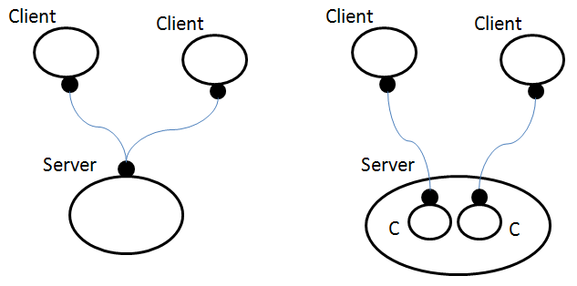
Numbers (and other values) can be represented as instances from a (potentially infinite) set of controls, e.g. (0 and 1):
N_0 | N_1 | ...
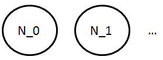
If these controls are atomic and have arity 0 (no ports) then "having a value" can only be modelled by placing such a control in a "meaningful" site.
This approach requires that the system support parameterised (families of) controls. It also suggests that reaction rules should be able to express such families and/or constrained subsets of them, e.g. "any number", or "any number between 5 and 10".
There is an obvious encoding of natural numbers using controls (data constructors) Succ (with one site) and Zero (which is atomic):
Zero | Succ(Zero) | Succ(Succ(Zero)) | ...
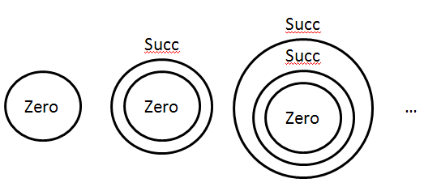
Depending on the context, this might be substituted for the previous approach (numbers as a family of controls).
Work at ITU-C on ReactiveXML (e.g. Hildebrandt and Winther, 2005) proposes the use of "constant" links to model numbers (and other constants such as strings). These correspond effectively to a set of "globally" accessible and constant outer names which represent these values.
So a Record with field "x" equal to "1" might be modelled as:
Record { x="1" }
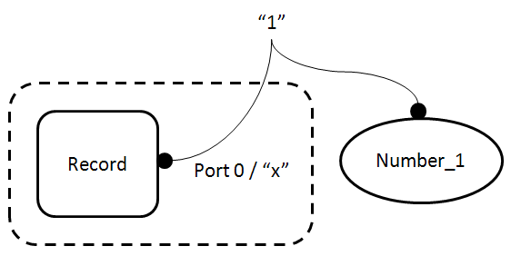
To ground this approach in the theory of bigraphs the constant link may optionally be considered to be linked to a unique node that represents the corresponding value (using one of the previous representations):
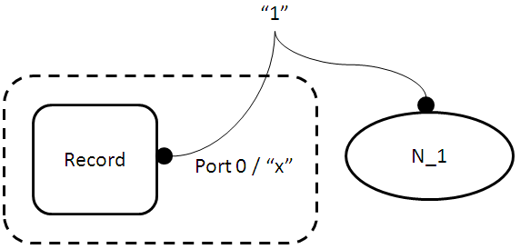
This modelling approach gives a concise XML representation, and leaves open the door to changing the actual node(s) representing the number (or other constant) at the other end of the link.
However it complicates the link graph and requires additional assumptions and constraints in the model, such as the constancy of these links, and the presence of the assumed context within thich they are found and defined. It also logically depends on one of the other number encodings to give the links their meaning.
This approach also suggests that reaction rules should be able to express constrained subsets of such constant links for ports, e.g. "(links corresponding to) any number", or "(links corresponding to) any number between 5 and 10".
The same approaches can be used for other types of values as for numbers (above). Some examples are given below.
In general, a data constructor can typically be modelled as a corresponding control. If it depends on multiple sub-values then these can distinguished as for fields in records (below) by means of dedicated child controls.
The obvious control-based model is two atomic controls:
True | False
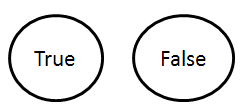
There are two main strategies, as for numbers: place-based and link-based.
Record( x( N_1 ) )
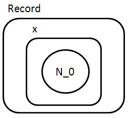
Note that a new set of controls (including "x") has been introduced to model the fields; the child(ren) of that control are the value(s) associated with that field.
This modelling approach avoids the use of links entirely (assuming that values are copies) and ensures that values are copied/deleted with containing fields or records within the parameter of a reaction.
Tuples can be modelled as records (see above) using a standard set of ordered field "names", e.g. "_1", "_2", ... (compare the similar properties used in RDF to model the elements of a collection). For example, using the place modelling the tuple (1,2):
Tuple( _1( N_1 ) | _2( N_2 ) )
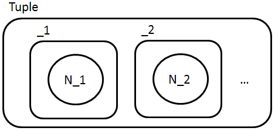
Tuples of different length could have distinct controls (which should give more expressiveness), e.g.
Tuple_2( _1( N_1 ) | _2( N_2 ) )
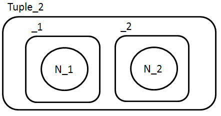
Record { x="1" }
This modelling approach gives a concise XML representation. However it complicates the link graph and requires additional assumptions and constraints in the model, such as the constancy of these links, and the presence of the assumed context within thich they are found and defined. It also generalises less well to other kinds of values, since they must all be linked to and their life-cycle and consistency maintained independently of the Record.
The state of an element of a system can modelled in a number of different ways.
A common description of finite state machines and petri nets is in terms of states as places which can hold a token representing their activation. E.g.
StateA{l1=a} ( Token ) | StateB{l1=a} ( )
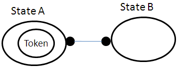
For each site this approach is limited to states corresponding to boolean or (small) counts.
A more flexible representation of state uses one of the record/field models, described above.
Car( speed( N_10 ) | ignition( True ) )
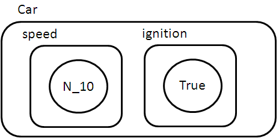
Another example of this is can be seen in the model of object position as an internal value (below).
State can be modelled by a change of control. This has the additional benefit that the state can affect the ports and sorting of the node, for example a network device having a "connection" port only in an active state.
InterfaceDown{}( ) | InterfaceUp{connection=c1}( )
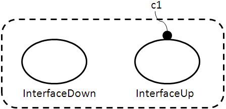
Milner (2009) uses this approach (without varying ports) when modelling petri nets (p.67), and also (2009b) with varying ports when modelling the savannah game.
Mainly for completeness, we note that the presence or absence of a link may indicate a state.
If there is a fixed and finite set of possible "directions" (or equivalent) by which places may be linked then "directions" can be modelled as ports and connectedness by links, e.g.
Square{east=s1e}() | Square(west=s1e,east=s2e}() | Square{west=s2e}
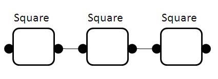
This approach is used by Søren and Damgaard (2005) when modelling the game of life.
If there is not fixed set of "directions" then the elaboration of ports to child nodes can be used to model a more general topology, e.g.
Locale( anchor{link=l1} ) | Locale( anchor{link=l1} | anchor{link=l2} ) | Locale( anchor{link=l2} )
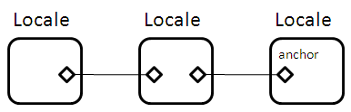
This approach is used by Milner (2009b) modelling the locales in the savannah game, and by Krivine, Milner and Troina (2008) when modelling cell membrane budding.
Modelling a cartesian space requires (a) modelling coordinates and (b) modelling the relationship between the coordinates and the space which they measure and (c) modelling the relationship between the objects in the space and their coordinates (and/or each other). These are considered in turn.
Coordinate( x( N_12 ) | y( N_10 ) )
or
Coordinate( _1( N_12 ) | _2( N_10 ) ) )
A single coordinate can be modelled as a control from a (parameterised) set of coordinate controls, e.g. "12,10":
Coordinate_12_10
or
[12,10]
The latter assumes a richer range of textual representations for parameterised controls.
The coordinates may be independent of the space (control) that they describe (see later examples).
locale( [1,4] | [2,4] | [3,4] | [2,5] | [3,5] )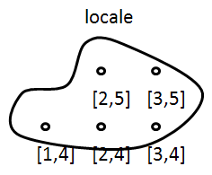
This has the benefit of making clear which coordinates fall within each parent space.
Note that the visual position of the coordinate controls within the locale is irrelevant to the bigraphical representation, but probably important for most visualisations. This implies that a graphical bigraph viewer/editor might have locally specific layout methods for particular kinds of models and modelling approaches.
The modelled object may be augmented with an internal control such as "Position" which contains the representation of its coordinate, e.g.:
Person( Position( [12,10] ) | ... )Typically this implies that the coordinates are independent from the space, because for the normal tree-based place graphs this would otherwise prevent the representation of two objects at the same coordinates or overlapping (only one could be the parent of each coordinate).
The modelled object may be augmented with a port that links to the representation of its coordinate, e.g.
Person{ position=p } | [12,10]{position=p}
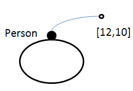This approach could be combined with coordinates independent of space, but would it this case the "internal value" approach would probably be preferred.
Debois, Søren, and Troels C. Damgaard, 2005: Bigraphs by Example. Technical report TR-2005-61 in IT University Technical Report Series, http://www1.itu.dk/sw40974.asp, which has examples of a network switch, finite automata, the game of "life'', combinatory logic, term unification and an event-driven system.
Hildebrandt, Thomas, Jacob W. Winther, 2005: Bigraphs and (Reactive) XML - an XML-centric model of computation. ITU Technical report TR-2005-56.
Krivine, Jean, Robin Milner and Angelo Troina, 2008: Stochastic Bigraphs. Electronic Notes in Theoretical Computer Science, Volume 218, 22 October 2008, Pages 73-96. Proceedings of the 24th Conference on the Mathematical Foundations of Programming Semantics (MFPS XXIV)
Milner, Robin, 2009: The Space and Motion of Communicating Agents. Cambridge University Press.
Milner, Robin, 2009b: Collaborative behaviour in the wild. (Exploratory note, February 2009.)